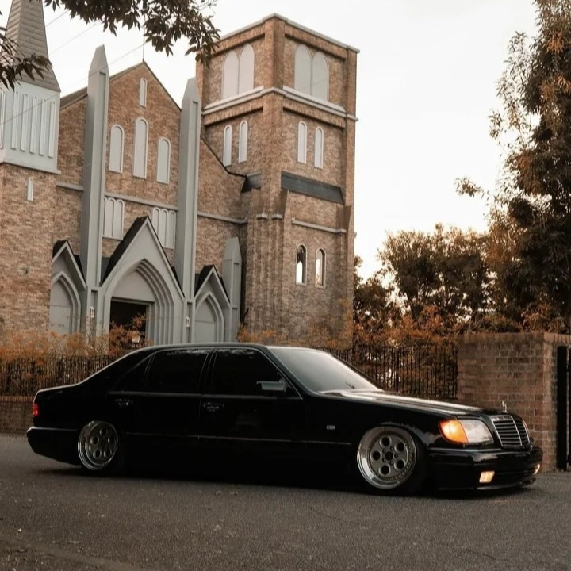

جميع الحقوق محفوظة, لمؤسسة مرسيدس مصر 2025
Engine: 6.0L V12 Horsepower: Around 389 hp Transmission: 4-speed automatic (in most models) 0–100 km/h (0–62 mph): Approximately 6 seconds Luxury Features: Double-glazed windows, soft-close doors, fully electric seats with memory, seat heating and cooling, optional air suspension Safety: Airbags, ABS, ESP, parking sensors, electric rear sunshade. Click here
The W140 S-Class earned the Arabic nickname "Al-Shabah" (meaning "The Ghost") because of Its large, sleek, and elegant body, which gave it a silent and intimidating presence on the road Extreme cabin quietness, making it feel like it glided silently High price and rarity at the time, adding an air of exclusivity Its mysterious look at night, especially with its subtle lighting and smooth lines.